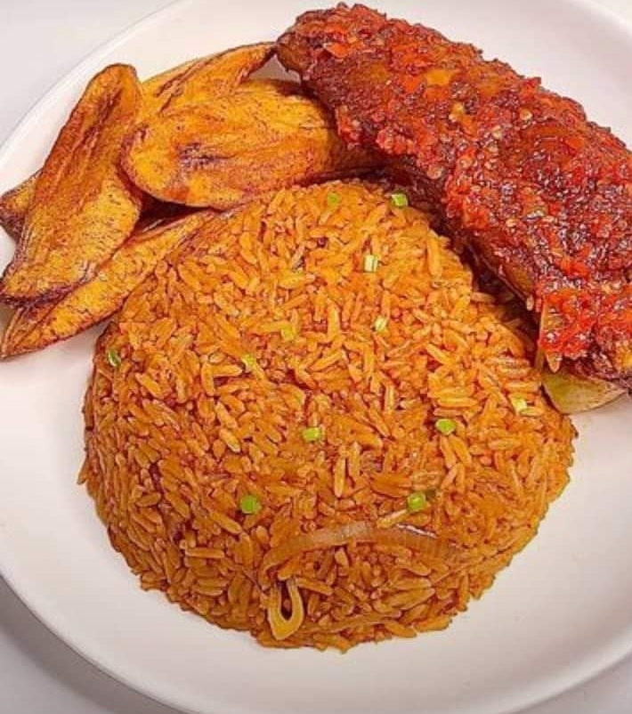

Description
Wash your protein thoroughly with salt and water
boil with salt,maggi,curry,thyme,seasoning, and add more
water so as to get stock water,allow to cook till tender
Remove the root of your fresh pepper,
tomato,and tatashe
pill the body of the onion,rinse and grind all together till it is a bit smooth
Ingredient
- Long grain rice
- Blended mixed pepper(fresh pepper,tomato,tatashe,onion)
- Salt
- Seasoning
- Onion
- Magarine
- Protein(optional)
- Maggi
- Stock water
- little veg(to ganish)
- Fried plantain(optional)
- Tin tomato
- Water
- Curry and Thyme
- Granulated onoin
- Nutmeg
- Bay leaf
Steps:
- Place your cooking pot on the fire,add your margarine based on the quantity of the rice,allow to hot,
add diced onion,tin tomato,stir together for about 2 to 5 minutes then pour-in the blended tomato
mixture,
stir together for it to blend along with the tin tomato
- In your fried stew,add your seasoning,maggi,salt,curry,thyme,bay leaf,stir and fry for some minutes.add
your
stock water then allow to fry
for another minutes while you add your water based on the quantity of the rice,stir and make sure it is
tasty,cover and allow to boil
- Wash your rice with salt and water thoroughly,drain out with a sieve then pour into the stock on the
fire,stir together thoroughly just for the Rice
and tomato to get mixed together,cover and allow to cook.Make sure to stir time to time just for you to
have
a uniform look Jollof rice
- When it is almost ready add a ring onion,granulated onion,little margarine to have a shining look,cover
then
allow to steam,make sure the water is properly dried